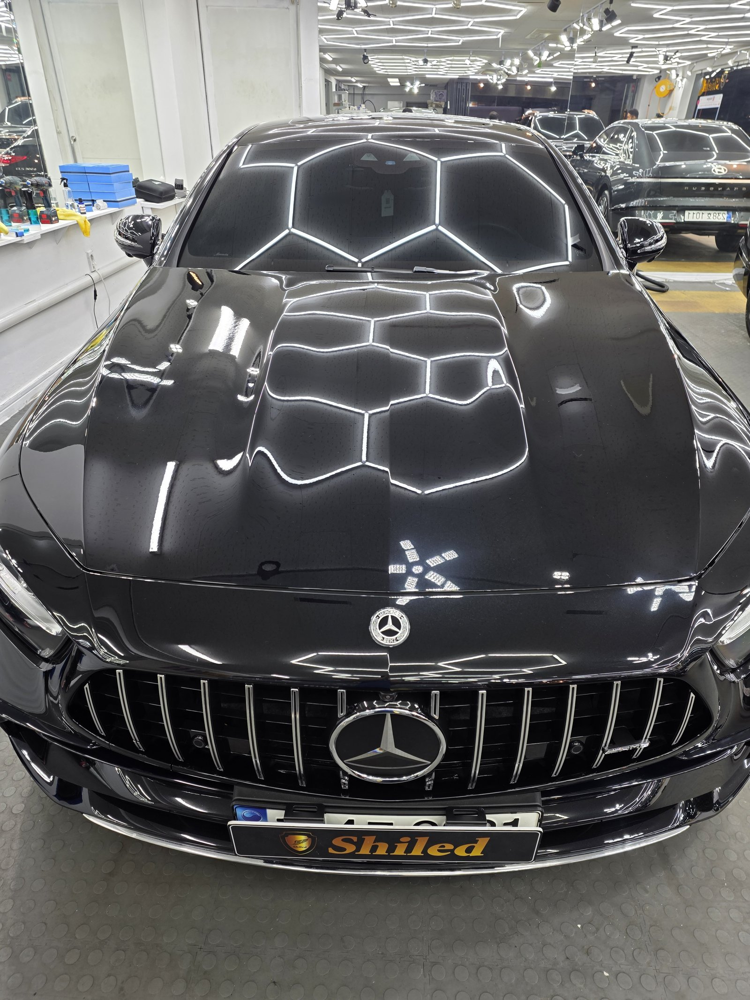
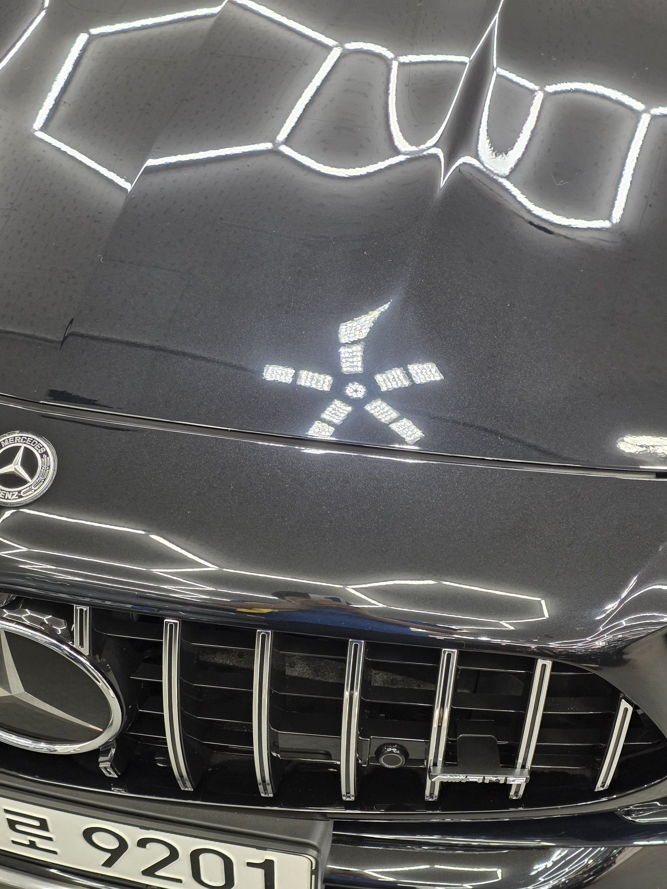
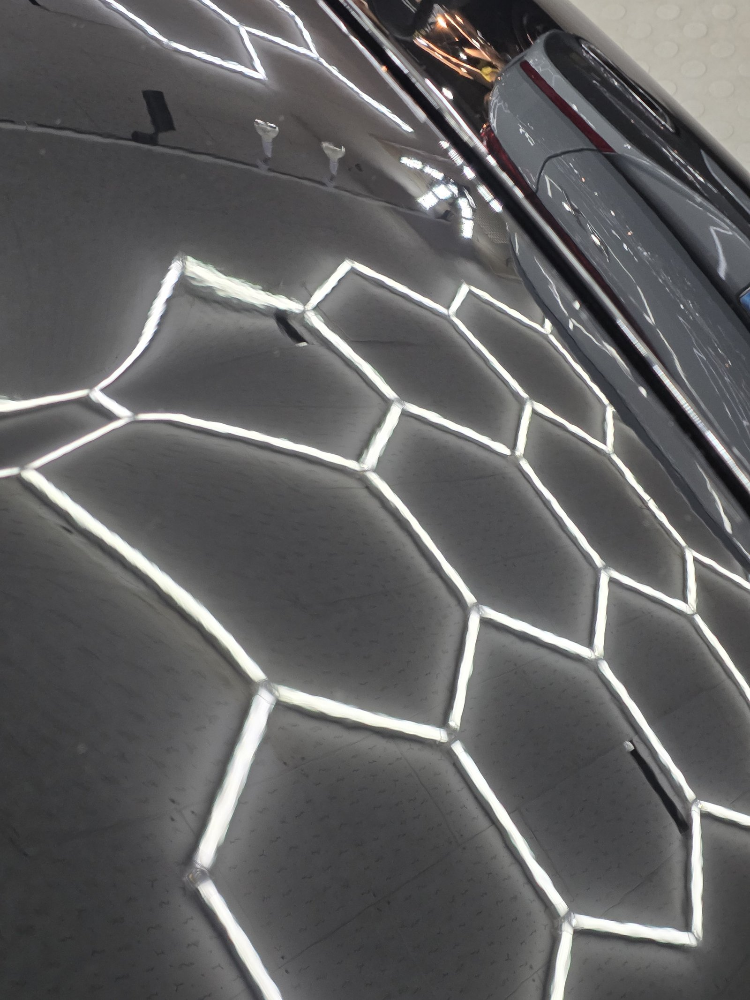
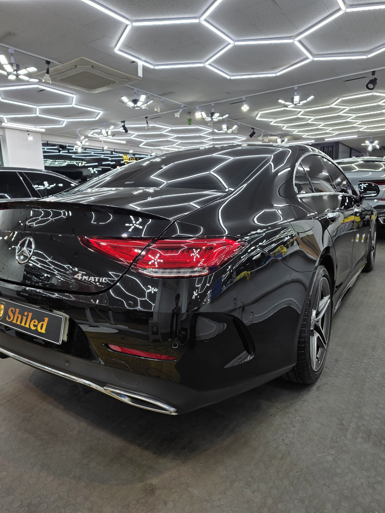
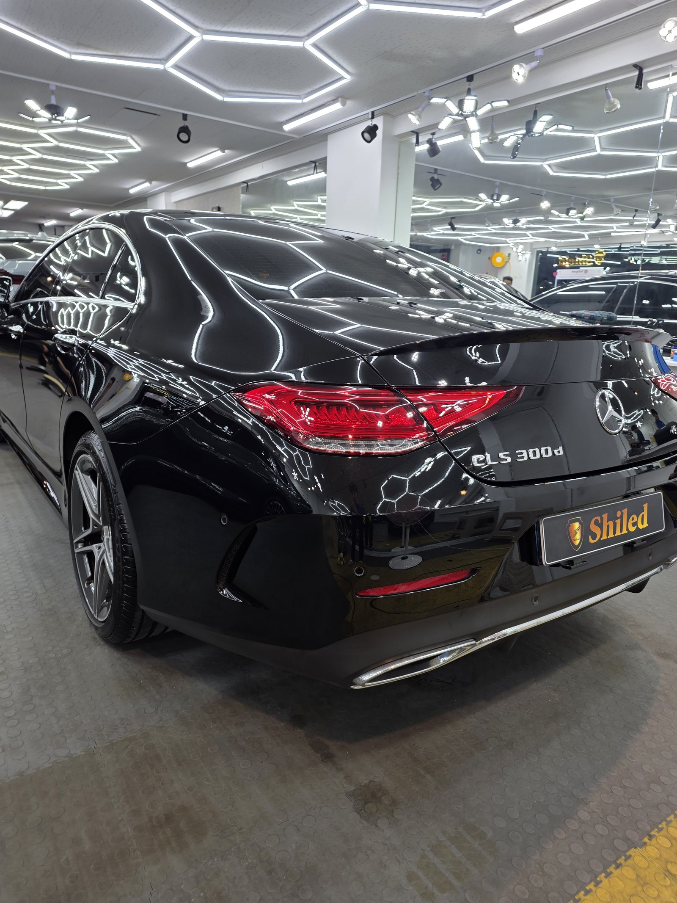
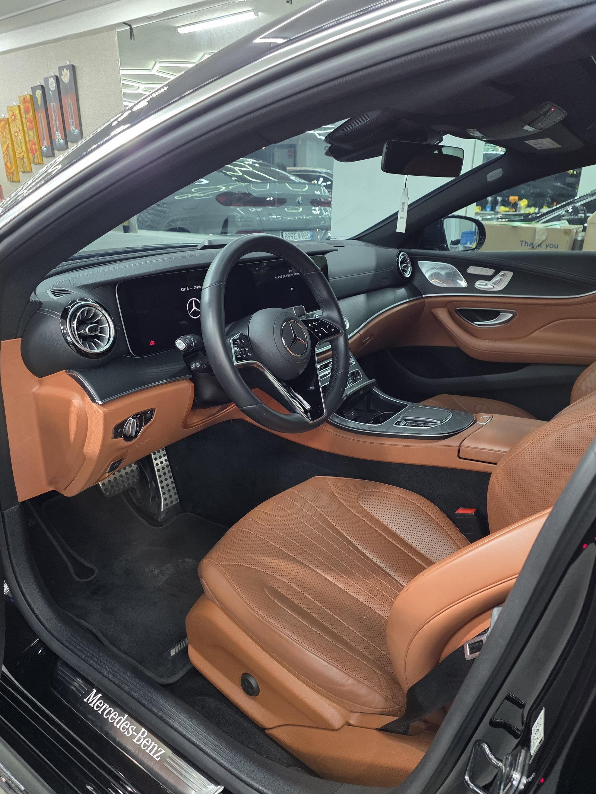
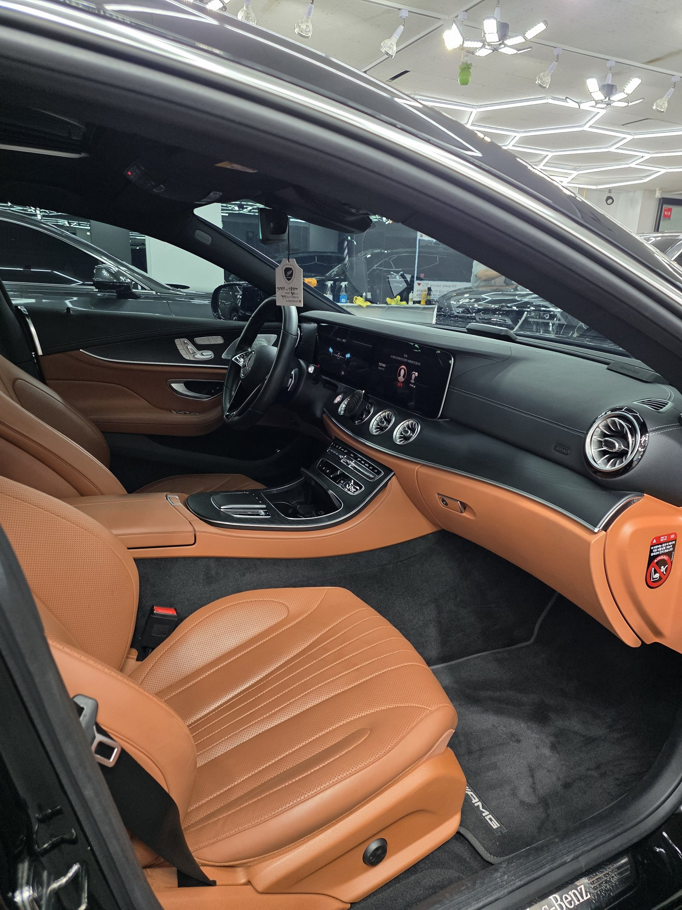
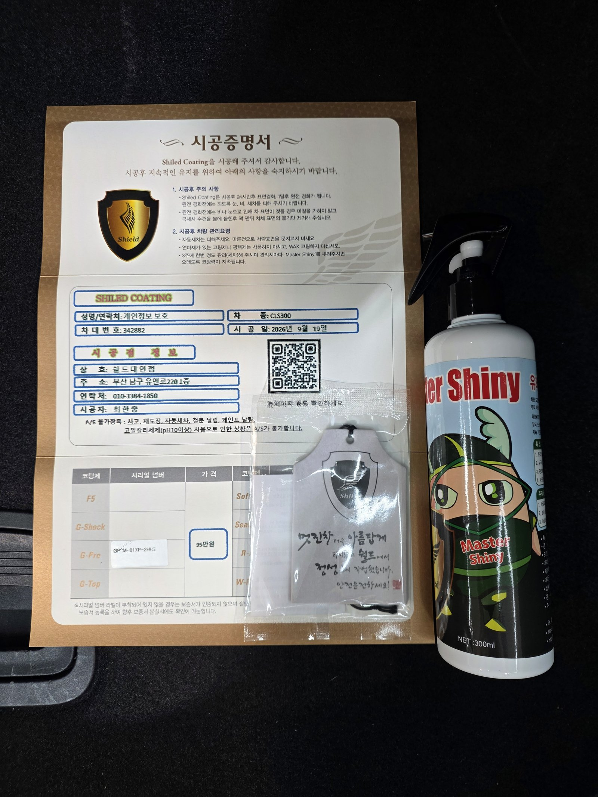

벤츠 CLS300 검정입니다.
루프라인이 낮고 완만하게 떨어지는 쿠페형 세단이라, 도장면이 넓게 이어져 있는 만큼 광택 작업도 더 세심하게 들어가야 하는 차입니다.

쿠페형 세단, 왜 광택이 더 까다로운가
패널이 크게 이어져 있어 광택기 각도를 일정하게 유지하기가 어렵기 때문입니다.
세단은 보닛·루프·트렁크가 비교적 평평하게 구획돼 있지만, CLS처럼 루프라인이 완만하게 흐르는 쿠페형은 곡면이 이어지는 구간이 넓습니다. 부위마다 패드 각도를 세심하게 바꿔가며 작업하지 않으면 광택 얼룩이 남기 쉬운 형태입니다. 본넷의 AMG 엠블럼 주변과 도어 라인처럼 굴곡이 변하는 지점을 특히 신경 써서 잡았습니다.

부산 광택, CLS는 어떤 순서로 진행했나
바로 연마부터 들어가지 않습니다.
① 디테일링 세차와 철분 제거로 표면 오염을 먼저 걷어내고,
② 조명으로 도장면 전체의 상태를 부위별로 확인한 뒤,
③ 컴파운드와 폴리싱 패드를 단계별로 바꿔가며 마감했습니다.
넓게 이어진 패널일수록 한 번에 밀어붙이지 않고 구간을 나눠 처리해야 광택 얼룩 없이 고르게 마무리됩니다.
기술자의 팁
CLS처럼 루프라인이 낮은 쿠페형 세단은 지붕과 트렁크 사이 곡률이 계속 바뀝니다. 이 구간을 같은 각도로 밀면 특정 자리만 과하게 깎이거나 광택 얼룩이 남습니다. 패드 압력과 각도를 구간마다 바꿔가며 작업해야 하는 이유입니다.

체커보드 조명이 흐트러짐 없이 이어져 반사됩니다. 도장면이 고르게 마감됐다는 뜻입니다
마감은 G-PRO 싱글코팅으로
광택을 마친 도장면은 보호막이 없는 맨살 상태입니다.
여기에 G-PRO 싱글코팅으로 마무리했습니다. 저희 제품 중 경도가 가장 높은 하드코팅으로, 스크래치 내성과 내구성에 특화돼 있습니다. 광택으로 만든 매끈한 표면을 흠집 없이 오래 지키는 데 적합한 선택입니다. 코팅제는 대표가 화학공학 전공으로 직접 개발·제조한 제품입니다.


내부도 함께 정리합니다
외부 도장을 잡는 동안 실내도 같이 관리합니다.
코냑 톤 가죽 시트까지 진공과 정리로 인도 전 컨디션을 맞춰드립니다.


시공증명서를 함께 드립니다
모든 시공 차량에 시공증명서를 드립니다.
차종·시공일·코팅제 시리얼 번호가 적혀 있고, 홈페이지에 등록해 보증을 받으실 수 있습니다. 이 차는 G-PRO 코팅으로 기록돼 있습니다.

차종·시공일·코팅제 시리얼이 기재된 시공증명서
자주 묻는 질문
Q. 쿠페형 세단은 광택 작업이 더 까다롭나요?
A. 네, 그런 편입니다. CLS처럼 루프라인이 낮고 완만하게 떨어지는 차는 패널이 크게 이어져 있어 광택기 각도를 일정하게 유지하기가 세단보다 까다롭습니다. 얼룩 없이 고르게 마감하려면 부위별로 패드 각도를 세심하게 바꿔줘야 합니다.
Q. 광택 후 왜 G-PRO 싱글코팅을 선택했나요?
A. G-PRO는 저희 제품 중 경도가 가장 높은 하드코팅입니다. 스크래치 내성과 내구성에 특화돼 있어, 광택으로 만든 매끈한 도장면을 흠집 없이 오래 지키는 데 적합합니다.
Q. 광택은 얼마나 자주 받아야 하나요?
A. 정해진 주기는 없습니다. 세차 습관과 보관 환경에 따라 잔기스가 쌓이는 속도가 다르기 때문입니다. 매장 조명처럼 강한 빛 아래서 도장면을 확인했을 때 자국이 눈에 띈다면 그때가 적기입니다.
Q. 쉴드광택 위치와 예약은 어떻게 하나요?
A. 부산 남구 유엔로220 1F 쉴드광택입니다. 예약·상담은 010-3384-1850, 대표 최한중이 직접 상담하고 책임 시공합니다.
쿠페형 세단의 완만한 도장면, 얼룩 없이 잡아드립니다.
제품을 직접 만드는 사람이 직접 시공합니다.
부산에서 광택을 고민 중이시면 편하게 연락 주십시오.
어떤 차를 타냐보다 어떻게 타냐가 중요합니다~!
시공 중에는 전화를 받지 못할 때가 많습니다.
카카오톡으로 차종과 원하시는 시공을 남겨주시면 확인 후 답변드립니다.
쉴드광택 · 부산 남구 유엔로220 1F · 대표 최한중